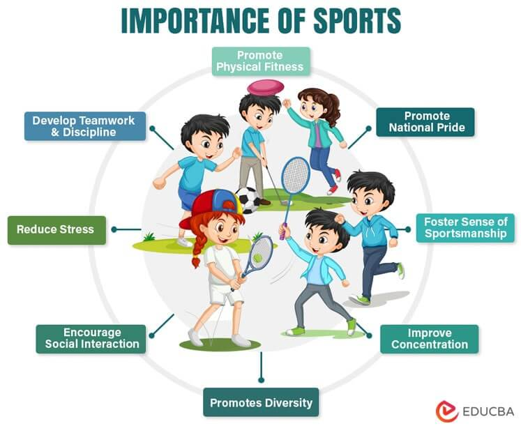

Why Sports Are Good for You
Playing sports regularly can have a huge positive impact on your body, mind, and overall well-being.
Physical Benefits
- Improves cardiovascular health
- Boosts stamina and strength
- Maintains healthy weight
- Improves coordination and flexibility
Mental Benefits
- Reduces stress and anxiety
- Enhances concentration and focus
- Builds self-confidence
- Teaches discipline and goal-setting
Social Benefits
- Encourages teamwork and cooperation
- Improves communication skills
- Helps build friendships
- Develops leadership qualities